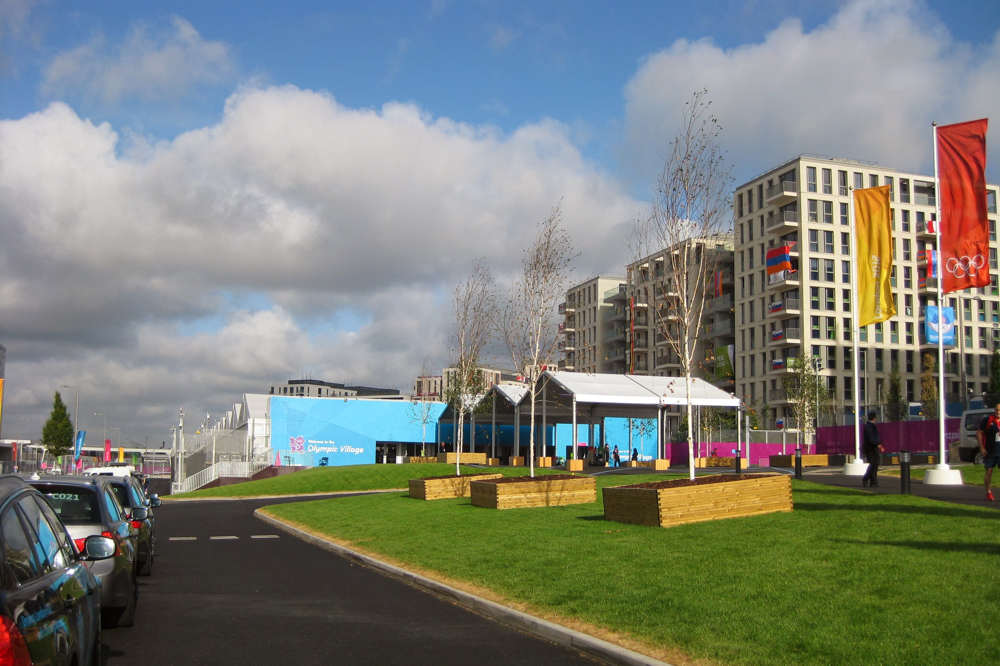

Shift 9 Orange C255 7.30am to 2.30pm
Thursday August 2nd 2012
Alarm at 5.45am and up, washed, dressed and out by 6.00am. On arrival at FDO was going to be put in Gold Team who
were going on standby. I told the Fleet lass she needed a column on her checkout sheet with number of customers. She asked why. I told her I had
had 1 customer in 8 shifts. She immediately switched me to the earlier starting Orange team and tasked me over to the Olympic Village. Sausage
and scambled egg roll was the breakfast of choice. Didn't have to wait for a briefing, so headed straight off to the village. Was in the queue in
the T3 staging area at 8.10am.
This was a great place to people-watch as the athletes walk past on thier way into the village having walked from the Olympic Park. The only
person we recognised was Jessa Jowell who got into one of our cars. Got to the loading zone at about 10.30am. The woman at the front of the
queue was not happy when two Equadoreans wanted to go to Eton Manor. She warned them it would be quicker to walk but they were insistent they
wanted to go in a car. The guy in front of me went to Heathrow.

At about 11.00am got a call that 4 Tunisians and their luggage needed to go to Heathrow. They were down by the pedestrian access. Two got in
my car and two got in C259. The estate boot was full and there was luggage on the back seat as well. They guy in the back spoke no English. I
think he was a swimmer. His coach who got in the front did speak English and the despatcher was able to glean we were going to Terminal 4. Had
to quickly stop on exit as the boot wasn't properly shut.
The SatNav said we would get there at 12.14 which seemed to come as a surprise to my passengers as they thought it would take 30mins!! I managed
to get out of the village without too much problem, but didn't recognise where I was and didn't turn left onto the A12 and was back on the A11.
Luckily I had made that mistake before and knew how to twiddle round and get on the A12 without it being too obvious. The SatNav wanted to take
me right off the Embankment up Horse Guards Avenue. I decided to ignore her as I had
no idea where we would end up, and stick to the route I knew. The guy in front seat got very excited when he saw
Big Ben.
Arriving at the top of Birdcage Walk it became obvious she had been trying to avoid the Changing of the Guard at Buck House. Waited an age at
the lights at the top of Birdcage walk. Must remember next time to cut the corner as Olympic cars now can. The guy in front videod our trip
across the font of Buck House and up Constitution Hill. The traffic out to Heathrow was fine. T4 is signposted separately from T1-T3. Almost
got in the wrong lane once as she was late to catch up on her instructions but caught it in time. C259 had just beaten us to it (he obviously
didnt do a twiddle in the Bow area) but I had to go round a second time to find a spot to park to drop off. Helped the guys get their bags out
and get luggage trolley. Didn't get a pin as they were a little late for their flight but did get a profuse thank you and handshake from the
coach.
Radiod in and as expected was called back to FDO to check out. Took the opportunity to take some tourist photos on my way back. Once
back, after a comfort break, made my way to the Park Live big screen in the Olympic Park, catching a view of
Gloriana berthed en-route. The Olympic Park is surprisingly green. Saw the semi
final in the Women's Judo which went to a Golden Score. When the Brit Gemma Gibbons threw the French World Champion for Ippon and a guaranteed medal the place went wild. Next up was
cultural interlude with the ROH on a pontoon on the River Lea performing The Owl and the Pussycat. Interesting is all I'll say. Crowd was
happy when we went over to the Slalom canoe at Lea Valley. Massive celebrations as
Team GB got Gold and Bronze. Decided to leave before the Velodrome stuff came on. Was able to get back to the hotel to catch the Team sprint
climax. Despair for Pendleton and Varnish but massive celebrations for the Guys. It was Pizza night in the Hotel so had a Pepperoni, Onion and
Mushroom pizza with my pint of Strongbow. Felt knackered so was in bed asleep by 9.00pm.